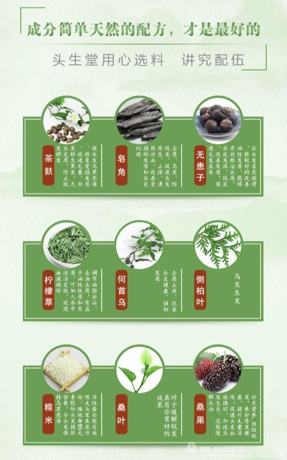
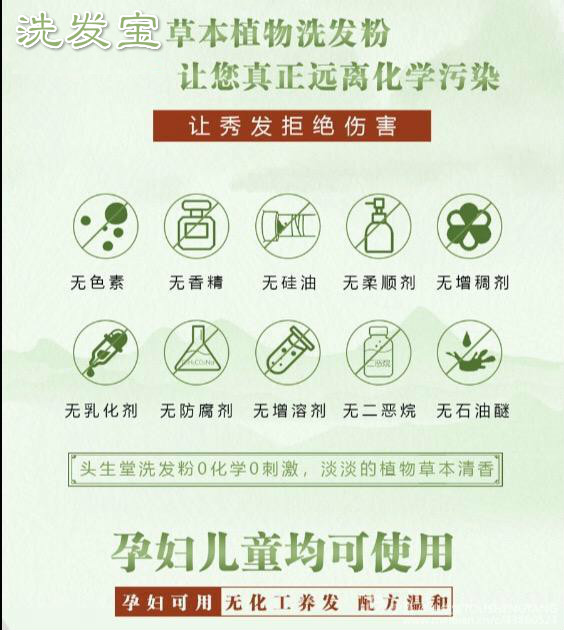

洗发宝顾名思义是一种原生态纯植物粉沫状的洗发产品。
他的成分有：皂角、无患子、茶籽、甘草、侧柏叶、苦参，桑叶，桑葚，蛇床子，地肤子，生姜，牛油果，艾草，何首乌，人参，墨旱莲，当归，熟地黄，黄连，鸡血藤，骨碎补，景天三七，薄荷，芦荟，白芷，红花，枸杞等36味中药。（皂角，无患子，山茶可以在洗头粉中起到起泡和天然表面活性剂的作用通俗点讲就是主要负责清洁）
 通过科学配伍把这三十六种植物组合在一起，古方新作 使用现代高科技的低温冷凝破壁磨粉技术把这些植物破壁粉粹到500-1000目的细度，（我们食用的淀粉是100目）粉质越细腻吸收情况就越好。零下195度的环境下破壁的好处是避免高温下植物的有效成分受到破坏同时有利粉粹的更细，而且通过低温后有效成分更温和，亲肤性更好。